2024年北京市西城区中考生物真题 原卷解析
2024年北京市初中学业水平考试（西城试卷）适应性练习
生物学
考生须知1．本试卷共8页，共两部分，共30题，满分60分。考试时间60分钟。
2．在试卷和草稿纸上准确填写姓名、准考证号、考场号和座位号。
3．试题答案一律填涂或书写在答题卡上，在试卷上作答无效。
4．在答题卡上，选择题用2B铅笔作答，其他试题用黑色字迹签字笔作答。
5．考试结束，将本试卷、答题卡和草稿纸一并交回。
第一部分
本部分共25题，每题1分，共25分。在每题列出的四个选项中，选出最符合题目要求的一项。
1. 国槐是北京市的市树，其结构和功能的基本单位是（ ）
A. 细胞B. 组织C. 器官D. 系统
【答案】A
【解析】
【分析】植物体的结构层次：细胞→组织→器官→个体。
【详解】A．除病毒外细胞是生物体结构和功能的基本单位。生物体是由细胞分化形成组织，由组织构成器官，由器官构成系统（动物体有系统，植物体无系统），生物体的细胞有细胞膜，可以保护细胞，同时控制物质的进出，使之从结构上成为一个独立的单位；细胞内有细胞核内含有遗传物质；细胞质里有能量转换器——线粒体，把有机物分解并释放出能量供细胞生命活动利用，使之从功能上成为一个独立的单位。因此，国槐是北京市的市树，其结构和功能的基本单位是细胞，A符合题意。
B．组织是由形态相似，结构、功能相同的细胞联合在一起形成的细胞群，B不符合题意。
C．器官是由不同的组织按照一定的次序结合在一起构成的具有一定功能的结构，C不符合题意。
D．系统是能够共同完成一种或几种生理功能的多个器官按照一定的次序组合在一起构成的结构，但是植物体没有系统，D不符合题意。
故选A。
2. 制作人体口腔上皮细胞临时装片时，将载玻片擦拭干净，随后滴加（ ）
A. 清水B. 碘液C. 酒精D. 生理盐水
【答案】D
【解析】
【分析】制作临时装片的基本步骤为：擦→滴→（漱）刮→涂→盖→染，载玻片擦拭干净后应滴加生理盐水，以保持细胞的正常形态。
【详解】在制作人的口腔上皮细胞临时装片时，由于人体细胞基质的浓度与生理盐水的浓度一致，为了维持细胞的正常形态，不至于因吸水而膨胀，或失水而皱缩，应向载玻片上滴生理盐水，D符合题意。
故选D。
3. 图所示为人的造血干细胞产生不同类型血细胞的过程，这一过程称为（ ）
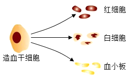
A. 细胞分裂B. 细胞分化
C. 细胞生长D. 细胞死亡
【答案】B
【解析】
【分析】细胞分裂就是一个细胞分成两个细胞的过程，细胞分裂使细胞数目增多。新分裂产生的细胞体积很小，需要不断从周围环境中吸收营养物质，并且转变成组成自身的物质，体积逐渐增大，这就是细胞的生长。细胞分化是指细胞在生长过程中细胞的形态、结构和功能发生变化的过程，细胞分化形成了不同的组织，如植物的保护组织、营养组织、分生组织和输导组织。
【详解】生物在个体发育过程中，一个或一种细胞通过分裂产生的后代，在形态、结构和生理功能上发生差异性的变化，这个过程叫做细胞分化。细胞分化产生了不同的细胞群。所以，人的造血干细胞产生不同类型血细胞的过程，称为细胞分化，故选B。
【点睛】正确识记并理解细胞分裂、细胞分化、细胞生长的含义是解题的关键。
4. 在植物根尖的结构中，吸收水分和无机盐的主要部位是（ ）
A. 根冠B. 分生区
C. 伸长区D. 成熟区
【答案】D
【解析】
【详解】因为成熟区有大量根毛，大大增加了植物与土壤的接触面积，成熟区是吸收水分和无机盐的主要部位。
5. 番茄是生活中常见的果蔬，其花中能够发育形成果实的结构是（ ）
A. 柱头B. 雄蕊C. 胚珠D. 子房
【答案】D
【解析】
【分析】一般当花完成传粉与受精后只有子房进一步发育。子房发育成果实，子房壁发育成果皮，胚珠发育成种子，珠被发育成种皮。
【详解】花经过传粉和受精后 发育情况为：
发育情况为：
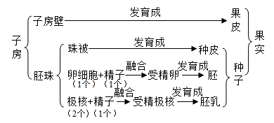
番茄是生活中常见的果蔬，其花中能够发育形成果实的结构是子房。ABC不符合题意，D符合题意。
故选D。
6. 蒸腾作用是植物体重要的生理活动之一。以下相关叙述错误的是（ ）
A. 水可以通过叶片的气孔散失到大气中
B. 植物在不同条件下蒸腾速率是相同的
C. 蒸腾作用有助于降低叶片表面的温度
D. 蒸腾作用为水和无机盐运输提供动力
【答案】B
【解析】
【分析】水分从活的植物体表面以水蒸气状态散失到大气中的过程，叫蒸腾作用。蒸腾作用的主要器官是叶。蒸腾作用的“门户”是气孔，气孔是由两个呈半月形的保卫细胞围成的空腔。其意义有：促进了根部对水分的吸收及水和无机盐在体内的运输；降低了植物体尤其是叶片表面的温度，避免被高温灼伤；提高大气湿度，增加降水。
【详解】A．气孔是植物蒸腾失水的“门户”，也是气体交换的“窗口”。故水可以通过叶片的气孔散失到大气中，A正确。
B．气孔的张开和闭合可以调节蒸腾作用，使植物体内经常保持着适量的水分。而气孔的张开和闭合又受光照强度、环境温度、空气湿度、空气流动等环境因素的影响。故植物在不同条件下蒸腾速率可能不相同，B错误。
C．蒸腾作用降低了植物体尤其是叶片表面的温度，避免被高温灼伤，C正确。
D．植物的蒸腾作用在把体内的水以水蒸气的形式通过叶片的气孔蒸发到大气当中去的时候，是一种“泵”的原理。它为根吸水提供了向上的拉力，同时溶解在水中的无机盐也一同被向上运输。所以，蒸腾作用促进了水和无机盐的运输，是植物向高处运输水分和无机盐的动力，D正确。
故选B。
7. 香果树是我国特有的濒危珍稀植物，自然条件下成苗率低。为促进香果树繁育，科研人员研究不同遮阴程度对幼苗光合速率的影响，结果如图。下列相关叙述错误的是

A. 四组幼苗应置于相同环境温度下B. 光合速率受光照强度的影响
C. 轻度遮阴时幼苗释放的氧气多D. 重度遮阴条件最适宜培育幼苗
【答案】D
【解析】
【分析】绿色植物通过叶绿体利用光能，把二氧化碳和水转化成储存能量的有机物（如淀粉），并且释放出氧气的过程，叫做光合作用。光合作用受光照强度的影响，一般来说，光照强度越强，光合作用速率越强。对照实验是在研究一种条件对研究对象的影响时，所进行的除了这种条件不同外，其他条件都相同的实验，这个不同的条件，就是唯一变量。一般的对实验变量进行处理的，就是实验组，没有对实验变量进行处理的就是对照组。该实验为了研究不同遮阴程度对幼苗光合速率的影响，设置了四组个组。从实验结果可知在轻度遮阴时幼苗光合作用强度最强。
【详解】A．该对照实验中只能有一个变量（遮阴程度），其它条件应相同。这样便于排除其他条件干扰实验。因此四组幼苗应置于相同环境温度下，A正确。
B．遮阴程度影响了光照强度，从实验结果可知幼苗的光合速率受光照强度的影响，B正确。
C．从实验结果可知，轻度遮阴时幼苗光合速率最强，释放的氧气最多，C正确。
D．重度遮阴条件下，幼苗的光合速率最低，产生的有机物过少，不利于幼苗的生长，D错误。
故选D。
8. 如图是人体消化系统结构模式图。下列相关叙述错误的是

A. 脂肪可在①中初步分解
B. ②所示的消化腺可分泌胆汁
C. ③分泌的消化液含蛋白酶
D. 消化和吸收的主要场所是④
【答案】A
【解析】
【分析】本题考查消化系统的结构及功能。图中①是口腔，②是肝脏，③是胃，④是小肠。
【详解】A．①是口腔，能初步分解淀粉为麦芽糖，不能分解脂肪，A错误。
B．②是肝脏，能分泌胆汁，帮助脂肪的消化，B正确。
C．③是胃，胃内有胃腺，胃腺能分泌胃液，胃液中的胃蛋白酶能初步消化蛋白质，C正确。
D．④是小肠，小肠是消化和吸收的主要场所，D正确。
故选A。
9. 《中国居民膳食指南（2022）》通过平衡膳食餐盘（如图）宣传平衡膳食的理念。下列相关叙述错误的是

A. 肉蛋奶是人体所需能量的主要来源
B. 水果、蔬菜可提供维生素
C. 摄入食物的类别要多样
D. 摄入食物的量要适当
【答案】A
【解析】
【分析】合理营养是指全面而平衡的营养。全面是指摄取的营养素种类齐全。平衡是指摄取的各种营养素的量合适，与身体的需要保持平衡。食物主要含有糖类、脂肪、蛋白质、水、无机盐、维生素六类营养物质。
【详解】A．人体生命活动所需要的能量，主要是由糖类提供的。葡萄糖、蔗糖、淀粉等都属于糖类。奶、蛋、鱼、肉类食物含有丰富的蛋白质。蛋白质是构成人体细胞的重要物质，人的生长发育以及受损细胞的修复和更新，都离不开蛋白质，A错误。
B．维生素是一类比较简单的有机物，种类很多。它们不是构成人体细胞的主要物质，也不为人体生命活动提供能量，B正确。
C．合理营养是指全面而平衡的营养。全面是指摄取的营养素种类齐全，C正确。
D．摄取的各种营养素的量合适，与身体的需要保持平衡，D正确。
故选A。
10. 血液成分中，富含血红蛋白，具有运输氧功能的是（ ）
A. 白细胞B. 红细胞C. 血小板D. 血浆
【答案】B
【解析】
【分析】血液包括血浆和血细胞，血细胞包括红细胞、白细胞和血小板。
【详解】A.白细胞具有细胞核，能吞噬发炎部位的病菌，具有防御和保护的作用，错误。
B.红细胞富含血红蛋白，功能主要是运输氧气，还可以运输部分二氧化碳，正确。
C.血小板具有止血和加速凝血的作用，错误。
D.血浆中含有大量的水，还含有血浆蛋白、葡萄糖、氨基酸、无机盐等，能运载血细胞，运输营养物质和废物，错误。
故选B。
【点睛】解答此题的关键是掌握血液的成分及各组成的功能。
11. 图是肾单位结构模式图，以下相关叙述错误的是（ ）

A. 肾单位是形成尿液的基本结构
B. 肾小球可滤过血浆中所有物质
C. 肾小囊中的原尿里含有葡萄糖
D. 肾小管长而弯曲有利于重吸收
【答案】B
【解析】
【分析】每个肾单位由肾小体和肾小管组成，肾小体由肾小球和肾小囊组成。肾小球是血管球，由入球小动脉分出的许多毛细血管相互缠绕而成，这些毛细血管汇集成出球小动脉。肾小囊套在肾小球的外面，下接肾小管。肾小管细长而曲折，周围缠绕着大量的毛细血管。肾小囊和肾小管组成的结构，就像一个“小漏斗”。尿的形成包括肾小球和肾小囊内壁的滤过作用，肾小管的重吸收作用两个过程。
【详解】Ａ．肾脏是形成尿液的器官。每个肾脏包括大约100万个结构和功能单位，叫做肾单位。肾单位是形成尿液的基本结构，Ａ正确。
Ｂ．当血液流经肾小球时，除血细胞和大分子的蛋白质以外，血浆中的一部分水、无机盐、葡萄糖和尿素等物质，都可以经过肾小球过滤到肾小囊中，Ｂ错误。
Ｃ．由上述分析可知：血浆中的一部分水、无机盐、葡萄糖和尿素等物质，都可以经过肾小球过滤到肾小囊中，形成原尿，Ｃ正确。
Ｄ．肾小管细长而曲折，周围缠绕着大量的毛细血管，有利于其重吸收营养物质，Ｄ正确。
故选Ｂ。
【点睛】解题的关键是识记并理解肾单位结构和功能。
12. 人体神经调节的基本方式是（ ）
A. 反射B. 运动C. 神经元D. 反射弧
【答案】A
【解析】
【分析】人体神经调节的基本方式是反射，包括非条件反射和条件反射。
【详解】A．人体神经调节的基本方式是反射，反射是人或动物通过神经系统对体内外各种刺激作出的规律性反应，A符合题意。
B．动物的运动主要靠肌肉的收缩与舒张，如人在做屈肘运动时，肱二头肌收缩，肱三头肌舒张，B不符合题意。
C．神经元又叫神经细胞，是神经系统的结构和功能单位，神经元的基本结构包括细胞体和突起两部分。神经元的主要功能是接受刺激，并传导神经冲动，C不符合题意。
D．反射活动的结构基础称为反射弧，包括感受器、传入神经、神经中枢、传出神经、效应器，任何一个环节中断反射不能进行，D不符合题意。
故选A。
13. 握手是人与人之间表示友好的一种礼仪。握手时，大拇指要向手心运动。如图是人右手掌心面骨骼及部分肌肉示意图，下列相关叙述错误的是

A. 拇短掌肌两端附着在同一块骨上B. 握住手时，拇收肌处于收缩状态
C. 握手时，骨骼肌牵拉骨绕关节运动D. 握手动作在神经系统调节下完成
【答案】A
【解析】
【分析】骨骼肌包括肌腹和肌腱，肌腹是骨骼肌中间较粗的部分，受刺激而收缩；肌腱是骨骼肌两端较细的部分，跨关节附在不同的骨上，有固定作用。骨骼肌有受刺激而收缩的特性，当骨骼肌受神经传来的刺激收缩时，就会牵动着它所附着的骨，绕着关节转动，于是躯体就产生了运动。在运动中，骨起杠杆作用，关节起支点作用，骨骼肌收缩产生动力。运动并不是仅靠运动系统来完成，它需要神经系统的控制和调节，它需要能量的供应，因此还需要消化系统、呼吸系统、循环系统等系统的配合。
【详解】A．拇短展肌两端附着在不同的两块骨上，A错误。
B．握住手时，大拇指向掌心靠近，拇收肌处于收缩状态，B正确。
C．握手时，大拇指需要向掌心靠近，此过程是骨骼肌牵拉骨绕关节运动产生的，C正确。
D．运动动作的产生是在神经系统的调节下，其他系统的配合下完成的，D正确。
故选A。
14. 在听觉形成的过程中，接受刺激产生兴奋的结构位于（ ）
A. 耳廓B. 鼓膜C. 听小骨D. 耳蜗
【答案】D
【解析】
【分析】耳朵的结构：耳郭、外耳道、鼓膜、鼓室、听小骨、耳蜗、前庭、半规管等。
【详解】A．耳廓的作用是收集声波，错误。
B．鼓膜的作用是能感应由外耳道传入的声波，产生振动并牵动附着其上的听小骨链，使声波的刺激传进中耳，错误。
C．听小骨的作用是能把鼓膜的振动传给内耳，传导过程还像放大器一样，把声音信号放大数倍，所以即使很轻微的声音人们也能听到。听骨为人体中最小的骨，又称为听小骨，由锤骨、砧骨及镫骨组成，错误。
D．耳蜗的作用：耳蜗具有传音、感音、平衡功能。耳蜗位于前庭的前内方，形似蜗牛壳，为螺旋形骨管，是内耳的一部分，与前庭和半规管组成内耳又称迷路。耳蜗的蜗管内含淋巴是耳蜗的传音结构；耳蜗的螺旋器是听觉感受器，内有多种听觉感受细胞，正确。
故选D。
【点睛】掌握耳朵的结构和功能是解题关键。
15. 下列可以促进生殖器官发育，激发并维持第二性征的激素是（）
A. 胰岛素B. 性激素
C. 生长激素D. 甲状腺激素
【答案】B
【解析】
【分析】性激素是指由动物体的性腺，以及胎盘、肾上腺皮质网状带等组织合成的甾体激素，具有促进性器官成熟、第二性征发育及维持性功能等作用。雌性动物卵巢主要分泌两种性激素——雌激素与孕激素，雄性动物睾丸主要分泌以睾酮为主的雄激素。性激素的化学本质是脂质。
【详解】Ａ．胰岛素的主要功能是调节糖在体内的吸收、利用和转化等，如促进血糖合成糖原，加速血糖的分解，从而降低血糖的浓度，使血糖维持在正常水平，Ａ错误。
Ｂ．由分析可知：性激素具有促进性器官成熟、第二性征发育及维持性功能等作用，Ｂ正确。
Ｃ．垂体分泌的生长激素（蛋白质类物质），作用于全身细胞，具有促进生长，促进蛋白质合成和骨生长的作用，Ｃ错误。
Ｄ．甲状腺分泌的甲状腺激素（氨基酸衍生物），几乎作用于全身组织细胞，具有促进代谢活动；促进生长发育（包括中枢神经系统的发育），提高神经系统的兴奋性的作用，Ｄ错误。
故选Ｂ。
【点睛】解题的关键是识记并理解常见激素及其主要作用。
16. 2022年4月，中国国家植物园在北京正式揭牌，其标志中包含了我国特有珍稀裸子植物银杏和水杉等元素（如图）。这两种植物的基本特征是

A. 具有假根、茎和叶分化B. 不具有输导组织
C. 种子裸露，无果皮包被D. 生活在阴湿环境
【答案】C
【解析】
【分析】银杏和水杉是裸子植物，裸子植物的种子没有果皮包被，种子裸露在外面。
【详解】A．具有假根、茎和叶的分化的植物类群是苔藓植物，A不符合题意。
B．蕨类植物、裸子植物、被子植物都具有输导组织，B不符合题意。
C．银杏和水杉是裸子植物，裸子植物的种子没有果皮包被，种子裸露在外面，C符合题意。
D．裸子植物不一定生活在阴湿环境，可以广泛分布在森林中，D不符合题意。
故选C。
17. 《中国生物物种名录2023版》正式发布，共收录物种135061种，其中动物就有13861属，65362种。与2022版比较，新增10027种。下列相关叙述错误的是（ ）
A. 种是最基本的分类单位B. 同属比同种的生物相似程度更高
C. 名录可以反映我国生物多样性现状D. 物种数量的增加与生态环境改善有关
【答案】B
【解析】
【分析】1．生物分类从大到小的等级依次是：界、门、纲、目、科、属、种。
2．生物多样性包括基因（遗传）多样性、物种（生物种类）多样性和生态系统多样性。
3．保护生物的栖息环境，保护生态系统的多样性，是保护生物多样性的根本措施
【详解】AB．生物分类单位由大到小是界、门、纲、目、科、属、种。界是最大的分类单位，最基本的分类单位是种。分类单位越大，生物的相似程度越少，共同特征就越少，生物的亲缘关系就越远；分类单位越小，生物的相似程度越多，共同特征就越多，生物的亲缘关系就越近，故同属比同种的生物相似程度更低，A正确，B错误。
C．生物多样性包括基因（遗传）多样性、物种（生物种类）多样性和生态系统多样性。基因多样性决定生物种类的多样性，生物种类的多样性组成了不同的生态系统，故名录可以反映我国生物多样性现状，C正确。
D．生物的栖息环境是生物赖以生存的基础，故此，物种数量的增加，说明有适合生物的栖息环境。因此物种数量的增加与生态环境改善有关，D正确。
故选B。
18. 水果常用保鲜膜包好后放在冷藏室中低温保存，下列相关解释不合理的是（ ）
A. 低温抑制水果表面微生物快速繁殖
B. 保鲜膜可以减少水果中水分散失
C. 低温条件下水果中有机物消耗增加
D. 保鲜膜在一定程度上隔离微生物
【答案】C
【解析】
【分析】细菌和真菌的生存条件：①水；②适宜的温度；③营养物质；④氧（有的不需要）；⑤生存空间等。
【详解】A．微生物的繁殖需要适宜的温度，而低温能抑制水果表面微生物快速繁殖，A正确。
B．保鲜膜不透水，包裹好水果后，可以减少水果中水分散失，B正确。
C．温度影响细胞呼吸作用强度。低温条件下水果中细胞的呼吸作用减弱，有机物消耗减少，C错误。
D．保鲜膜物理特性柔软、致密，具有在一定程度上隔离微生物的作用，D正确。
故选C。
【点睛】正确识记并理解食物的保存原理是解题的关键。
19. 下列食品中没有经过发酵的是（ ）
A. 泡菜B. 米醋C. 腐乳D. 鲜奶
【答案】D
【解析】
【分析】微生物的发酵在食品的制作中具有重要的意义，如制馒头、做面包、酿酒等要用到酵母菌。
【详解】A．制泡菜要用到乳酸菌，是根据泡菜内的乳酸菌发酵制成的，用到了发酵技术，A不符合题意。
B．米醋利用的醋酸菌的发酵而制成的，B不符合题意。
C．制腐乳要用到毛霉、米曲霉等微生物，其发酵过程需要适宜的温度，温度过高、过低都会抑制或杀死微生物的生长和繁殖，用到了发酵技术，C不符合题意。
D．鲜奶不需要发酵技术，D符合题意。
故选D。
【点睛】了解发酵技术在食品的制作中的应用，掌握常见的微生物与食品制作的例子，即可解答。
20. 人体正常卵细胞中的染色体组成为（ ）
A. 22条+XB. 22条+Y
C. 22对+XXD. 22对+XY
【答案】A
【解析】
【分析】男女体细胞中都有23对染色体，有22对染色体的形态、大小男女的基本相同，称为常染色体；第23对染色体在形态、大小上存在着明显差异，这对染色体与人的性别决定有关，称为性染色体。男性的性染色体是XY，女性的性染色体是XX。
【详解】女性体细胞的染色体组成是22对+XX，卵细胞的染色体组成是22条+X。所以人类女性卵细胞中染色体组成分别是22条+X，故A正确，BCD错误。
故选A。
21. 为选育再生稻新品种，我国航天员将再生稻种子带入太空。该育种方式是希望通过射线和微重力等因素的作用，从根本上改变再生稻（ ）
A. 种子的形态结构B. 种子的遗传物质
C. 细胞的营养物质D. 细胞的分裂方式
【答案】B
【解析】
【分析】太空育种即航天育种，也称空间诱变育种，是将作物种子或诱变材料搭乘返回式卫星送到太空，利用太空特殊的环境诱变作用，使种子产生变异，再返回地面培育作物新品种的育种新技术。
【详解】太空育种主要是通过强辐射，微重力和高真空等太空综合环境因素诱发植物种子的遗传物质发生变异。细胞的分裂方式主要受到遗传因素和环境因素的调控，种子的营养物质主要由母体植物提供，并且在种子形成过程中已经确定，基因控制性状。遗传物质改变可能影响种子的形态结构，因此，太空育种方式是从根本上改变再生稻细胞的遗传物质。ACD不符合题意，B符合题意。
故选B。
22. 水痘是由水痘--带状疱疹病毒引起的，可通过注射水痘疫苗进行预防。下列相关叙述错误的是
A. 该病毒是引发水痘的病原体B. 水痘疫苗起到抗原的作用
C. 水痘疫苗刺激机体产生抗体D. 该过程属于非特异性免疫
【答案】D
【解析】
【分析】病原体是引起传染病的细菌、病毒、寄生虫等生物。抗原：能引起淋巴细胞产生抗体的物质。抗原包括进入人体的微生物等病原体、异物、异体器官等。特异性免疫（又称后天性免疫）：出生后才产生的，只针对某一特定的病原体或异物起作用。通过注射疫苗获得的免疫力属于特异性免疫。
【详解】A．病原体是引起传染病的细菌、病毒、寄生虫等生物。带状疱疹病毒是引发水痘的病原体，A正确。
B．抗原：能引起淋巴细胞产生抗体的物质。抗原包括进入人体的微生物等病原体、异物、异体器官等。水痘疫苗起到抗原的作用，B正确。
C．病原体侵入人体后，刺激了淋巴细胞，使其产生了一种抵抗该病原体的特殊蛋白质，叫抗体。因此，水痘疫苗刺激机体产生抗体 ，C正确。
D．特异性免疫（又称后天性免疫）：出生后才产生的，只针对某一特定的病原体或异物起作用。通过注射疫苗获得的免疫力属于特异性免疫。因此，注射水痘疫苗预防水痘的过程属于特异性免疫，D错误。
故选D。
23. 秋冬季节易发生流行性感冒，下列预防措施不合理的是（ ）
A. 始终紧闭门窗可以保护易感人群B. 佩戴口罩可以切断传播途径
C. 尽量避免聚集可以减少感染机会D. 锻炼身体可以提高抗病能力
【答案】A
【解析】
【分析】预防传染病的措施有控制传染源、切断传播途径、保护易感人群。
【详解】A．流感期间始终紧闭门窗造成空气不流通，更容易滋生细菌和病毒，A错误。
B．佩戴口罩可以阻断流感，属于切断传播途径，B正确。
C．流感期间尽量避免聚集可以减少感染的机会，C正确。
D． 锻炼身体可以提高抗病能力，属于保护易感人群，D正确。
故选A。
24. 某药品说明书内容节选如下图，关于该药物的叙述正确的是（ ）
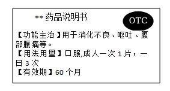
A. 需凭医生开具的处方才能购买B. 适用于消化不良患者的治疗
C 病症严重时应加倍服用D. 超过有效期仍然可以服用
病症严重时应加倍服用D. 超过有效期仍然可以服用
【答案】B
【解析】
【分析】安全用药是指根据病情需要，正确选择药物的品种、剂量和服用时间等，以充分发最佳效果，尽量避免药物对人体产生的不良作用或危害。
【详解】A．说明书上有非处方药（OTC）标注，因此，不需执业医师开具的处方就可以购买，按说明书服用，适用于容易自我诊断、自我治疗的小病，A错误。
B．从说明书上的功能主治可知，该药适用于消化不良患者的治疗，B正确。
C．用药前要明确诊断，要针对不同的病情，适当用药，药物一般都有一定的毒副作用，过量服用，会危害人体健康，用药剂量要适当，C错误。
D．任何药物过期都是不能使用的，任何药物都是有保质期。在使用药物前一定要先确定药物是否在有效期内，只有使用有效期内的药物才能达到临床效果，并且是安全、有效的。药在有效期过了之后使用，可以使药物的药效减弱，甚至失效。而有些药物在过期之后可能会出现药物的化学性质改变，使用之后可能会导致过敏反应或者中毒反应，引起比较严重的副作用，D错误。
故选B。
25. 加拉帕戈斯群岛的不同小岛上生活的地雀种类存在差异。地雀喙型的进化过程如图。下列相关叙述错误的是
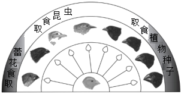
A. 多种地雀具有共同的祖先B. 地雀祖先存在喙型不同的变异
C. 喙型的进化与食物种类无关D. 喙型的进化是自然选择的结果
【答案】C
【解析】
【分析】达尔文认为：生物具有过度繁殖的倾向，而在自然界，生物赖以生存的食物和空间是非常有限的，这样就必然存在生存斗争；在生存斗争过程中，具有有利变异的个体，就容易生存，具有不利变异的个体，就被淘汰。适应环境的变异逐代遗传下去并得到积累和加强，经过长期的进化过程，形成了形态各异、食性和栖息场所也各不相同的地雀种群。
【详解】A．根据进化过程图可知，这些雀鸟来自于共同的原始祖先，由于食性不同，喙型的进化方向不同，A正确。
B．地雀喙的形状和大小有所区别，是地雀祖先存在喙型不同的变异，不同环境选择了不同的喙型的结果，B正确。
C．喙型的进化是自然选择的结果，而食物种类作为自然环境条件对各种喙型进行选择，故喙型的进化与食物种类有关，且喙型与食性是相适应的，C错误。
D．结合分析可知，喙型的进化是长期自然选择的结果，环境中的食物因素决定了雀鸟喙的进化方向，D正确。
故选C。
第二部分
本部分共5题，共35分。
26. 火龙果具有较高的营养价值，在我国部分地区广泛种植。
（1）火龙果酸甜适口，维生素C含量丰富。果肉中的水分和维生素C主要储存在果肉细胞的______中。
（2）用种子繁殖是常见的育苗方式，种子萌发时通常需要的外部条件有：适宜的______、一定的水分和充足的空气。
（3）为提高火龙果种子的萌发率，研究者进行了如下2个实验：
①实验一：将火龙果种子播种于3个不同的土层深度（0cm、3cm和8cm），研究结果如图1所示，请据此给火龙果的播种提一条建议：_______。
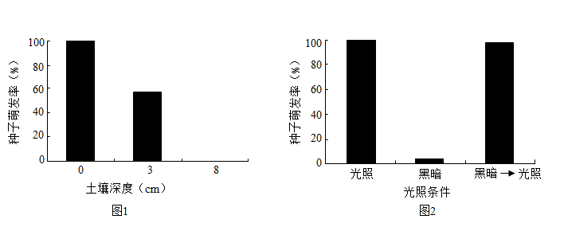
②为什么会出现这个结果呢？研究者进行了实验二：分别在周期性光照（12小时/天）和黑暗条件下（用2层铝箔纸严实地包裹培养皿）进行火龙果种子的萌发实验，设置这两种条件是为了进行_______。然后将黑暗条件下未萌发的种子转移至光照下，结果如图2所示。据此可知火龙果种子的萌发除了一般条件，还需要________．（4）除了播种以外，火龙果的繁殖还可以通过扦插、嫁接和植物组织培养技术等实现，这些技术都属于_______生殖（选填“无性”或“有性”），可以快速获得大量具有母体优良性状的植株。
【答案】（1）液泡 （2）温度
（3） ①. 火龙果的播种要浅播 ②. 对照 ③. 光照
（4）无性
【解析】
【分析】对照实验是指在探究某种条件对研究对象的影响时，对研究对象进行的除了该条件不同以外，其他条件都相同的实验；根据变量设置一组对照实验，使实验结果具有说服力；一般来说，对实验变量进行处理的，就是实验组；没有处理的就是对照组。
【小问1详解】
液泡内含细胞液，细胞液中溶解有多种物质，如或甜味或辣味的物质、色素以及营养物质等。因此，果肉中的水分和维生素C主要储存在果肉细胞的液泡中。
【小问2详解】
种子萌发过程中需要进行旺盛呼吸作用，释放种子萌发所需的能量；因此，种子萌发的外界条件为：适宜的温度、充足的空气和一定的水分。
【小问3详解】
①分析图1可以看出，土壤深度0cm时种子萌发率约为100%，土壤深度3cm时种子萌发率约为60%左右，土壤深度8cm时种子萌发率为0；因此，据此给火龙果的播种提一条建议：火龙果的播种要浅播。
②根据分析可知，对照实验指的是除了探究的条件不同以外，其它条件都相同的实验；对照实验分为实验组和对照组，实验组是接受实验变量处理的对象组，对照组是自然状态下不接受实验变量处理的对象组；因此，设置这两种条件是为了进行对照实验。分析图2可知，光照条件下种子萌发率约为100%，黑暗条件下种子萌发率低于10%，将黑暗条件下的种子移至光照条件下萌发率约100%；据此可知火龙果种子的萌发除了一般条件，还需要光照。
【小问4详解】
有性生殖是经过两性生殖细胞的结合，形成受精卵，再由受精卵发育成新个体的方式；无性生殖是不经过生殖细胞的结合，由母体直接产生出新个体的生殖方式，无性生殖主要包括分裂生殖、孢子生殖、出芽生殖、营养生殖（嫁接、压条、扦插等）、组织培养和克隆等。因此，除了播种以外，火龙果的繁殖还可以通过扦插、嫁接和植物组织培养技术等实现，这些技术都属于无性生殖，可以快速获得大量具有母体优良性状的植株。
27. 呼吸道是气体进出人体的通道，需时刻保持通畅。
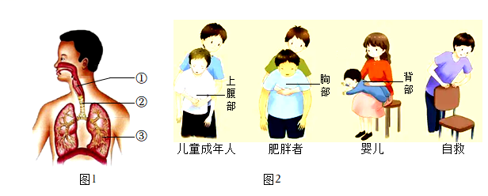
（1）图1为人体呼吸系统结构模式图。正常吞咽时，会厌软骨会盖住喉的入口处，避免食物进入喉和[②]_______，阻塞呼吸道。
（2）呼吸道阻塞会使气体无法进出肺，影响肺泡与血液之间进行_______，进而使组织细胞通过呼吸作用为生命活动提供的_______减少，严重时可导致死亡。
（3）若呼吸道被异物阻塞，危急情况下可采用海姆立克急救法实施救助（如图2）。据图分析，对儿童和成年人进行急救时，应快速向后上方挤压其_______部。挤压会导致被救者_______（填下列字母）。重复上述操作，直至异物被排出。施救时，应注意对不同人群挤压部位不同，并且尽量不造成二次伤害。
a.膈顶上升→胸腔容积缩小→肺内气压增大→肺内气体推动异物向外移动
b.膈顶下降→胸腔容积扩大→肺内气压减小→肺内气体推动异物向外移动
c.膈顶上升→胸腔容积扩大→肺内气压减小→肺内气体推动异物向外移动
（4） 预防异物进入呼吸道，生活中应注意_______（写出一例即可）。
预防异物进入呼吸道，生活中应注意_______（写出一例即可）。
【答案】（1）气管
（2） ①. 气体交换 ②. 能量
（3） ①. 上腹 ②. a
（4）物品细小部件不能随意放置，避免幼儿吞入
【解析】
【分析】1．图1中①是喉，②是气管，③是肺。人们吞咽食物时，喉上升，会厌软骨向后倾斜，将喉门盖住，食物顺利进入食管。下咽动作完成以后，会厌软骨又恢复直立状态，以便进行呼吸。如果吃饭时大声说笑，就会使会厌软骨来不及向后倾斜，不能及时将喉门盖住，导致食物“呛”入气管的事故发生。
2．呼吸运动的结果实现了肺与外界的气体交换（即肺的通气）。呼吸运动包括吸气和呼气两个过程。①膈肌与肋间肌收缩，引起胸腔前后、左右及上下径均增大，膈肌顶部下降，胸廓的容积扩大，肺随之扩张，造成肺内气压减小，小于外界大气压，外界气体进入肺内，完成吸气；②当膈肌和肋间外肌舒张时，肋骨与胸骨因本身重力及弹性而回位，膈肌顶部升高，结果胸廓容积缩小，肺也随之回缩，造成肺内气压大于外界气压，肺内气体排出肺，完成呼气。海姆立克急救法进行急救时，被施救者相当于呼气的过程将异物咳出体外。
【小问1详解】
人们吞咽食物时，喉上升，会厌软骨向后倾斜，将喉门盖住，食物顺利进入食管。避免食物进入喉和气管，阻塞呼吸道。
【小问2详解】
肺泡与血液的气体交换过程：肺泡中的氧气透过肺泡壁和毛细血管壁进入血液；同时血液中的二氧化碳也通过这些毛细血管壁和肺泡壁进入肺泡，然后随着呼气过程排出体外。进入血液中的氧气，通过血液循环送到全身各处的组织细胞里。
呼吸道阻塞会使气体无法进出肺，影响肺泡与血液之间进行气体交换，导致机体缺乏氧气。细胞进行呼吸作用释放能量需要氧气的参与，机体缺乏氧气会影响细胞进行呼吸作用释放能量，严重时可导致死亡。
【小问3详解】
由图2可知，对儿童和成年人进行急救时，应快速向后上方挤压其上腹部。挤压时，被施救者的膈顶上升，使胸腔容积缩小，使肺内的气压增大，肺内气体就会推动异物向外移动（相当于向外呼气的过程），故选a。
【小问4详解】
为预防异物进入呼吸道，生活中应注意：吃饭时不大声说笑；物品细小部件不能随意放置，避免幼儿吞入等。
28. 大熊猫以其标志性的黑白毛色为人们所熟知。然而，在秦岭野生大熊猫种群中，却出现了一种罕见的毛色突变体——棕白色大熊猫。研究人员对此展开研究。
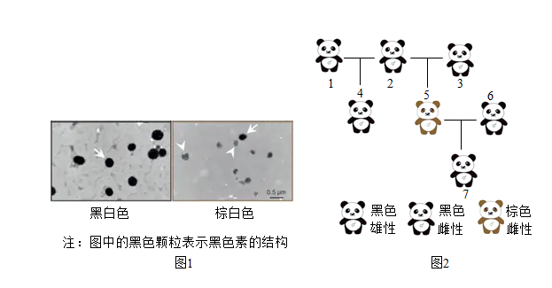
（1）大熊猫繁育困难。人工圈养中会采取人工授精的方式辅助生殖，形成早期胚胎后再植入______中，胎儿通过脐带和_______从母体获取营养。
（2）棕白色熊猫和其亲本毛色出现不同，称为______现象。为探明大熊猫棕白毛色与黑白毛色的差异，研究团队首先对毛发横切面进行了显微观察。通过图1可知，二者的主要差异是______。
（3）科研人员研究了与这只棕白色大熊猫有关的繁育过程（如图2所示），据此可知，毛色黑和毛色棕是一对______。如果用B和b表示这对基因，那么这只棕色熊猫（5号）的基因型为______。其亲代2号和3号的基因型分别为______．
【答案】（1） ①. 子宫 ②. 胎盘
（2） ①. 变异 ②. 黑白色毛发横切面中的黑色素多于棕白色毛发
（3） ①. 相对性状 ②. bb ③. Bb、Bb
【解析】
【分析】生物体的某些性状是由一对基因控制的，而成对的基因往往有显性和隐性之分，当细胞内控制某种性状的一对基因，一个是显性、一个是隐性时，只有显性基因控制的性状才会表现出来。
【小问1详解】
大熊猫属于哺乳动物，熊猫胚胎在母体子宫中发育，所以人工圈养中会采取人工授精的方式辅助生殖，形成早期胚胎后再植入子宫中，胎儿通过脐带和胎盘从母体获取营养。
【小问2详解】
亲代与子代间的差异为变异，棕白色熊猫和其亲本毛色出现不同，称为变异现象。为探明大熊猫棕白毛色与黑白毛色的差异，研究团队首先对毛发横切面进行了显微观察。通过图1可知，二者的主要差异是黑白色毛发横切面中的黑色素比棕白色毛发横切面中的黑色素多。
【小问3详解】
毛色黑和毛色棕是同种生物同种性状的不同表现形式，属于一对相对性状。子代出现了亲代没有的性状，这个新出现的性状就是隐性性状；如果用B和b表示这对基因，那么这只棕色熊猫（5号）的基因型为bb。其亲代2号和3号的基因型分别为Bb、Bb。
29. 在甜椒的农业生产中，通常采取沟灌的方式进行灌溉，但该方式耗水量大。为寻求更好的灌溉方式，科研人员进行了如下研究。
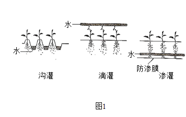
（1）选取相同面积的三块样地，将生长状况一致的等量甜椒幼苗种植至各样地中。每个样地幼苗数量不宜过少，目的是_______。
（2）按图1所示分别对三块样地进行灌溉，使各样地土壤含水量基本保持一致。幼苗生长中还要保证各样地的______等条件相同且适宜。
（3）分别测定三块样地甜椒生产的相关指标，．结果如图2和表1所示。
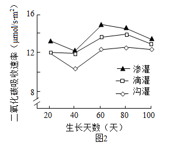
表1：
灌溉方式 | 灌水总量（m3/hm2） | 甜椒产量（kg/hm2） |
沟灌 | 2813.6 | 27522.7 |
滴灌 | 2407.2 | 33548.7 |
渗灌 | 2276.3 | 36561.7 |
①甜椒根系吸收的水分通过_______组织运输到叶片，可以作为原料参与光合作用。
②图2中，通过测定______来反应光合速率。据表1可知，甜椒产量最高的灌溉方式是渗灌，推测原因是：由于渗灌的给水位置在土壤深层，能促进根系向下生长，进而促进叶的生长，光合作用合成的______最多，因此产量最高。
③为了验证上述推测，可以进一步测定三种灌溉方式下甜椒的_______等指标，并进行比较。
（4）综合以上信息分析，渗灌可作为甜椒生产上既能增产又能_______的灌溉方式。
【答案】（1）避免偶然因素的影响；减少误差 （2）光照、温度、土质
（3） ①. 输导 ②. 二氧化碳吸收速率 ③. 有机物 ④. 叶片面积、主茎周长 （4）节水
【解析】
【分析】（1）对照实验：在探究某种条件对研究对象的影响时，对研究对象进行的除了该条件不同以外，其他条件都相同的实验。根据变量设置一组对照实验，使实验结果具有说服力。一般来说，对实验变量进行处理的，就是实验组。没有处理的就是对照组。（2）绿色植物的光合作用是在叶绿体里利用光能把二氧化碳和水合成有机物，释放氧气，同时把光能转变成化学能储存在合成的有机物中的过程。
【小问1详解】
选取相同面积的三块样地，将生长状况一致的等量甜椒幼苗种植至各样地中，每个样地幼苗数量不宜过少，目的是避免偶然因素的影响，减小误差。
【小问2详解】
按图1所示分别对三块样地进行灌溉，使各样地土壤含水量基本保持一致。幼苗生长中还要保证各样地的光照、温度等条件相同且适宜。
【小问3详解】
①根吸收水分和无机盐的主要部位是成熟区，根内部一部分细胞分化形成导管，能输导水分和无机盐。甜椒根系吸收的水分通过输导组织运输到叶片，可作为原料参与光合作用。
②图2中，通过测定二氧化碳吸收速率来反映光合速率。据表可知，甜椒产量最高的灌溉方式是渗灌，推测原因是：由于渗灌的给水位置在土壤深层，根生长具有向地性和向水性，能促进根系向下生长，进而促进叶的生长，光合作用合成的有机物最多，因此产量最高。
③为了验证上述推测，可以进一步测定三种灌溉方式下甜椒的叶片面积、主茎周长等指标，并进行比较。
【小问4详解】
综合以上信息分析，渗灌可作为甜椒生产上既能增产又能节水的灌溉方式。
30. 阅读科普短文，回答问题。
在北京的部分郊野公园，你会发现一些石块和枯枝落叶堆积在一起。这些石块和枯枝落叶真的是园林作业后随意丢弃或遗忘的吗？它们究竟是什么？有着什么样的作用？其实这是工作人员特意堆砌而成的本杰士堆（如图1）。
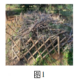
本杰士堆的搭建过程并不复杂；先选择枯木和树枝等图1搭建框架，然后选取石块放置在周边进行固定，最后倒入含有种子的土壤与落叶。搭建后，随着植物的生长，吸引来取食其叶片的昆虫，一些食虫鸟也会来此栖居。慢慢地，还会有小型兽类到访此处。本杰士堆中的生物多样性逐渐增加，构成了微小的生态系统，如图2所示。
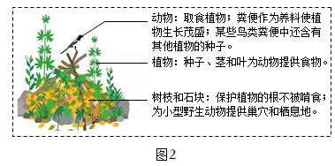
本杰士堆有生态修复型和科普教育型等类型。生态修复型的搭建地点要选择人为干扰程度低的地方，让野生动物有自由的栖息空间，加速生态系统的修复过程。科普教育型可修建在公园休憩区附近，以进行科普教育和宣传，提高人们的环保意识。本杰士堆搭建的意义是用小生态的构建促进大环境的改善，实现“以生态的办法解决生态问题”。北京市园林绿化局将在森林和郊野公园中搭建更多的本杰士堆，推进首都生态环境的改善。
（1）本杰土堆中的所有生物和______构成了生态系统。其中的植物可为动物提供食物，在生态系统成分中属于_____。根据文中信息写出一条含有食虫鸟的食物链：_______
（2）下列关于本杰士堆的叙述正确的是______（多选）。
a．动物会取食植物，对生态系统只有负面作用
b．微生物能够分解动物粪便，促进物质循环
c．其中的各种生物相互联系，相互影响
（3）生态环境的改善需要每个人的关注和参与。若你和生物小组的同学参加有关部门组织的去某公园搭建本杰士堆的志愿活动，请完成以下实践活动记录单。
“搭建本杰士堆，做环保小卫士”实践活动记录单：
①为了解公园现有的本杰士堆数量及分布情况，我们将采用______法开展研究。
②结合公园的地理位置与设施分布，我们绘制了下图所示的公园部分区域示意图。该区域中适宜搭建生态修复型本杰士堆的地点是______（填字母），原因是_______。
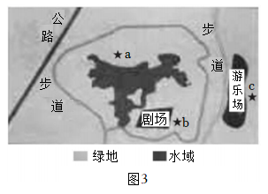
③为了让更多的公众关注和参与生态环境的保护工作，需要向公园游客进行相关的科普宣传，我们计划这样做：_______。（请写出宣传方式并简述宣传内容）
【答案】（1） ①. 环境 ②. 生产者 ③. 植物→植食性昆虫→食虫鸟
（2）bc （3） ①. 调查 ②. ａ ③. 生态修复型本杰士堆的搭建地点要选择人为干扰程度低的地方，让野生动物有自由的栖息空间，加速生态系统的修复过程。 ④. 宣传方式：科普教育型。宣传内容：环保要靠每一个公民，科普教育型本杰士堆可以进行科普教育和宣传，提高人们的环保意识。
【解析】
【分析】在一定的空间范围内，生物与环境所形成的统一的整体叫生态系统。生态系统包括生物成分和非生物成分，生物成分包括生产者（绿色植物）、消费者（动物）和分解者（细菌、真菌）。
【小问1详解】
题干中的本杰士堆即是一个微小的生态系统。本杰士堆中的所有生物与环境组成一个整体，构成了生态系统。植物可以通过光合作用制造有机物，是生态系统中的生产者。根据文中信息，可以写出一条含食虫鸟的食物链：植物→植食性昆虫→食虫鸟。
【小问2详解】
动物直接或间接以植物为食，能维持生态平衡，促进物质循环。对生态系统并不是只有负面作用。微生物作为生态系统中的分解者，能够分解动物粪便，促进物质循环。本杰士堆是一个微小生态系统，其中的各种生物相互联系，相互影响。 故选bc 符合题意，a不符合题意。
故选bc。
【小问3详解】
调查是科学探究常用的方法之一。为了解公园现有的本杰士堆数量及分布情况，我们将采用调查法开展研究。
图中适宜搭建生态修复型本杰士堆的地点是 a 地，因为 a 地人为干扰程度最低，可让野生动物有自由的栖息空间，加速生态系统的修复过程。
宣传方式：搭建科普教育型本杰土堆。宣传内容：环保要靠每一个公民，提高人们的环保意识。